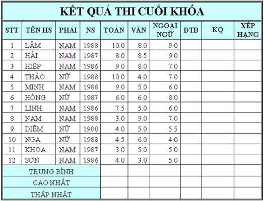

Bài tập Excel 4
Nhập và trình bày bảng tính như sau:

Yêu cầu:
Câu 1: Tính ĐTB (điểm trung bình) = (TOÁN * 2 + VAN * 2 + NGOAINGU)/5.
Làm tròn đến 2 chữ số thập phân.
Câu 2: Điền vào cột KQ nếu ĐTB >=5, điền là “Đạt”, ngược lại là “Rớt”.
Câu 3: Tính điểm trung bình, cao nhất, thấp nhất, xếp hạng.
Câu 4: Thêm vào cột KHEN THƯỞNG sau cột XẾP HẠNG, điền dữ liệu cho cột KHEN THƯỞNG như sau: Hạng 1 thưởng 200 000, hàng 2 thưởng 100 000, còn lại không thưởng.